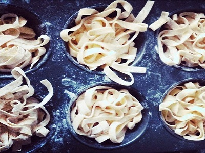
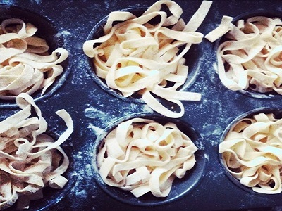

Tasty Life
As a Taiwanese, FOOD really plays an important role in our lives. Diversity has been a great feature in our culinary culture, thanks to immigrant society and inherent climate. My 2nd home, Portugal, has similar characteristics- variety and good utilization of local ingredients. Sometimes it even surprises me with resemblances of Asian tastes. Below are some dishes I found typical but also featured in my beloved 2 lands:
🍢豬血糕 | Pig's Blood Cake
Sounds bloody 😱 but not scary 😅 the main ingredient is actually glutinious rice and the texture is firm but slightly chewy. Dressing with criander and peanut powder is my favorite and definitely very Taiwanese👍🏻
🍗鹽酥雞 | Taiwanese Friend Chicken
A devil food while dieting! Smells good and the tastes even more amazing 😍 And yes, as a typical street food in Taiwan, you can find a variety of choices to be fried with on a vending stand, including blood rice cake 😉 Fried basiley typically gives a green touch on the top🌿!
🍲三杯雞 | 3-Cup Chicken
Wait! ✋🏻 not ask you to drink! Soya sauce, seasame oil and rice alcohol are used at the ratio of 1:1:1 as the sauce base, and this is so-called "3-cup". Cut chicken pieces are mixed with ginger, garlic, chilly and other vegetables as wish! Believe me, you won't want to stop pouring the browny sauce on the top of your shinning white rice 🍚
🍜牛肉麵 | Taiwanese Beef Noodle Soup
Selective beef cut🥩 (shin/shank with gelatin) for this dish carries tenderness. Broth with diverse spices enhances the core body. Vegetables 🥕🥬🌶 bring the colors and sweetness. Finally, supporting actress- noodles 🍜- take us to a satisfying ending. Oh! And if you are a fan, adding braised beef tripe and tendon will be an amazing option 😲
🍨芒果冰 | Mango Shaved Ice
South of Taiwan belongs to tropical climate, which provides the inherent condition for the cultivation of tasty mangosğŸ¥, together with the strong agricultural knowledge of our famers. Snow-white shaved ice covered with golden mango pieces soaked inside the mango juice, plus a scoop of mango ice cream on the top of this golden mine, who can resist such divine temptation on a hot summer day 🤤
🍮豆花 | Tofu Pudding
Perhaps you see tofus mostly in the area of biological ingredients in the supermarket and perhaps you think it is tasteless and a mere vegetarian option, however, in Taiwan, it is so diverse to encompass from the starter to dessert. Tofu pudding contains high amount of water, which results in a very tender texture. With different toppings and sweet broth, every tofu pudding dish is unique 👍🏻🥇. My favorite is with tapioca pearl and taro/sweet potatoğŸ .
🍵烏龍茶 | Oolong Tea
The level of fermentation of oolong tea leaf is between green and black tea, the taste and the color are naturally intermidiate. I guess it is hard to describe its flavor, so please take a seat and taste it slowly with a still mind 🍵😌
🧆Orelha de porco com coentro | Pork Ear with Coriander
Honestly, it is not a dish common in every household in Portugal, however, it is one of the dishes I would like to replicate at home. Chewy pork ear with the dressing of olive oil, onion, vinegar and criander, sounds simple but the simplicity brings out its fine part.🐷👂🏻
🥣Canja de galinha | Chicken Soup/Broth
This is a nostalgic dish, which your mom/grandmom may catch the hen🐔 in the back yard and spend hours to extract the essence of the whole hen into that golden broth. With some pieces of chicken meat, offal and small pasta, having one bowl injects the full energy into your body 💪🏻
🍲Cozido à Portuguesa | Boiled Mixed Meat and Vegetables Portuguese style
When I wanna eat well and well-balanced, I choose this dish because it contains various meat, solid vegetable and carb. Pour some broth on your rice and taste the complexity of lands 🛤
🥩Cabrito assado | Roasted Lamb
Typical dish on Easter 🐰 celebration in Portugal. Slowly roasted in the oven, golden-brown color tells itself how tasty it is.
🍛Arroz de cabidela | Chicken Rice with Blood
Hahaha, maybe my past life was a vampire🧛🏻‍♀️Rice slowly cooked with chicken blood and vinegar has its strong, satisfying, also unique taste. I just love it 🥄😍
🥧Pastel de Nata | Porguese Egg Tart
OK! This was probably the first thing we remember about Portugal. A warm ♨ pastel de Belém is my favorite kind. Believe or not, in Portugal, you can find quite descent ones in the supermarket, and in Taiwan, the most tasty one exists in KFC 😁
🍷Vinho verde | Green Wine
Here comes to the wine in Portugal, which obviously isn't so obviously well-known as other main wine-producing countries. Vinho verde, translated directly as green wine, not really green, but the color tells its unripeness of grape, which results in the freshness, acidity and gaseous body. Vinho verde branco is my best company with seafood, especially during summer time. 🍸🥂🌞
 ➕ Japan
➕ Japan
 ➕ Thai
➕ Thai

 ➕ NL
➕ NL
 ➕ LUX
➕ LUX
 ➕ FIN
➕ FIN
 ➕ NOR
➕ NOR

 ➕ UK
➕ UK
 ➕ DE
➕ DE
 ➕ PT
➕ PT
 ➕ IT
➕ IT
 ➕ AT
➕ AT
 ➕ CZ
➕ CZ
 ➕ IR
➕ IR
 ➕ HU
➕ HU

 ➕ NI
➕ NI
 ➕ TR
➕ PA
➕ TR
➕ PA
 ➕ GR
➕ GR
 ➕ CU
➕ CU


 ➕ MM
➕ MM
 ➕ SG
➕ SG

 ➕ HR
➕ HR

 ➕ PH
➕ PH


 
